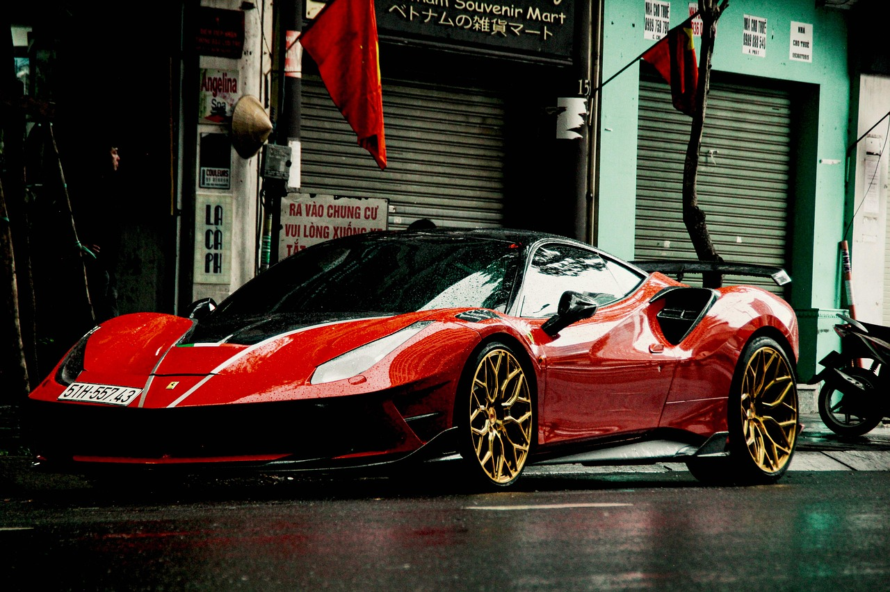
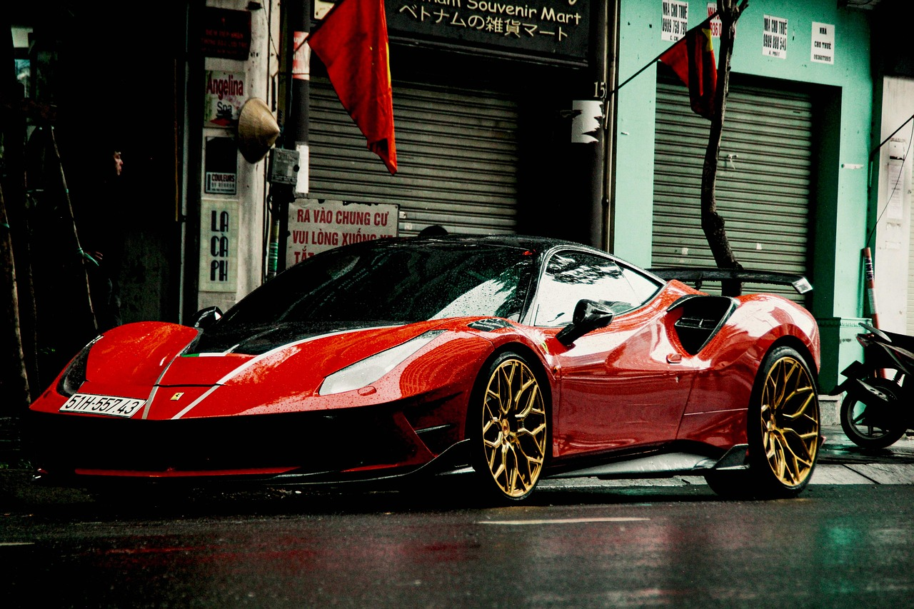

Ferrari 488 GTB
The Ferrari 488 GTB is a perfect blend of power, luxury, and cutting-edge technology. Powered by a 3.9L V8 engine, it can reach 0-60 mph in just 3 seconds.
The Ferrari 488 GTB is a perfect blend of power, luxury, and cutting-edge technology. Powered by a 3.9L V8 engine, it can reach 0-60 mph in just 3 seconds.
The Ferrari F8 Tributo features the same 3.9L turbocharged V8 as the 488 but with even more refined performance and agility. It delivers incredible handling and a top speed of 211 mph.

With its hybrid powertrain and 986 horsepower, the Ferrari SF90 Stradale is Ferrari's most powerful road car ever. It combines traditional V8 power with electric motors for a thrilling experience.